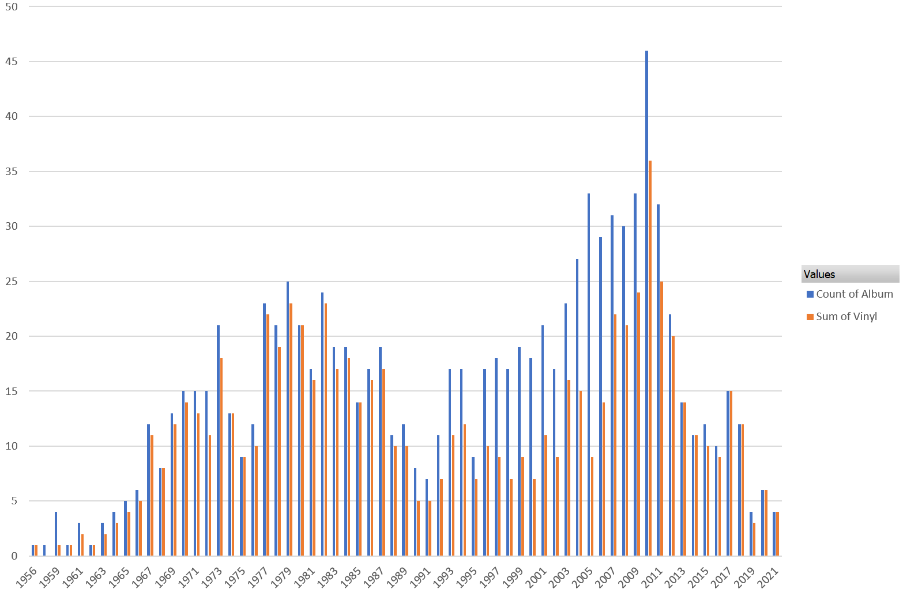

The Life Music Project¶
For over ten years I have been slowly working on a personal project to create a definitive list of my favorite pop music albums. Music has played a special role in my life, and I want to create a canonical list of my favorites. These pages will serve as the final document of this process. At the time of my writing this introduction (12 Aug 2021), I have compiled a list of 994 albums spanning the years of 1956 to the current day. I’m not sure how long this final portion of the project will take, and it is very possible the list could expand or morph significantly as I go.
Why am I doing this?¶
In 2011 the music streaming website Spotify was launched. It didn’t start off with everything, but it did start with 90% of everything. All of a sudden those CDs and MP3s I had been collecting and curating didn’t matter so much anymore. I keep pretty detailed records on these kinds of things, and at the dawn of the Spotify era I had a collection of 2035 albums in various formats. Roughly the first 600 of those were acquired solely on compact disc in what we now call the “physical media era.” I know the content of those 600 discs in a way that I will never know music again. This is partially because pop music is not just an art form, but a cornerstone of youth culture. I was in my teens and early 20s in those days and that is a factor. However, I do believe the most significant factor was the way that I obtained and consumed that music. When you pay significant money to get a physical item that you need to store and take care of, you engage with it differently than a data file that you got for little (or no) money. The rise of the MP3 changed my relationship with music forever. Not only was a obtaining music more quickly, I was no longer limited by the selection at the local record store. This made it much easier to try out new things and discover music I may not have otherwise encountered. It also changed, in somewhat negative ways, the way I searched for new music. Before the MP3 it almost required research and study to carefully expand upon the favorites you currently knew and discover artists and albums that could become new favorites. If MP3 disrupted the way that I discovered and acquired new music, Spotify destroyed it. At the time of my writing this, 98.8% of my favorite albums are available to stream on the platform. There are limitless options for what to play next. In the streaming era it can become difficult to remember what music I liked, or even listened to. I know exactly what I listened to when I was 15, because it sits on shelves down in my basement. This project is an attempt to create a universal model of “my music” through all eras.
What do I hope to Learn?¶
My Canonical Favorites - A consistent understanding of what my favorite music is throughout the eras of music, and my music consumption.
A manageable wish list - My interest in physical media has led me to compile my “ultimate music collection” in the form of vinyl records. I like the idea of generally bounding this collection to my true favorites.
When did I “get old?” - Like most people, I have the strong feeling that at some point in the last 10 years I lost touch with not only with popular music, but also my connections to the youth culture it represents.
Why is music so important to me? - When I really got into the meat of this project, it started to become clear that I was learning a lot about myself through my relationship with this music. I look forward to this continuing in the final phase of this project.
What are the rules?¶
No rankings - I’m not interested in creating rankings or top tens. This is a binary classification problem. Is an album one of my favorites (y/n)?
Things will change - The initial list was crafted carefully and rigorously, but I’m sure as I document things, there will be additions and possibly removals. At a minimum, this will take a year or two to write down, and I will have new favorites from the years that pass.
Only my arbitrary definition of pop music - This includes rock, rap, R&B, jazz, and electronic music. It even includes contemporary classical music that is made with a a rock and roll spirit. So Philip Glass is in, Leonard Bernstein is out. Except for West Side Story, because musicals are in.
I’m not reviewing I’m reflecting - This is about what albums are my favorite and why. I’m not qualified to write a review, or interested in doing so.
There will be analytics¶
I can’t help myself, it is what I do. I have been doing some analysis of the numbers, and I will be adding them to the site when I am happy with them. For now, here is a chart of my favorite albums by year. Also showing how many of my favorites from each year are in my curated vinyl collection. I currently own 76% of my favorites on vinyl.
{kind=link}